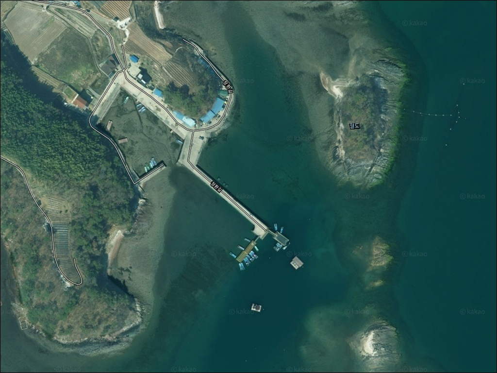
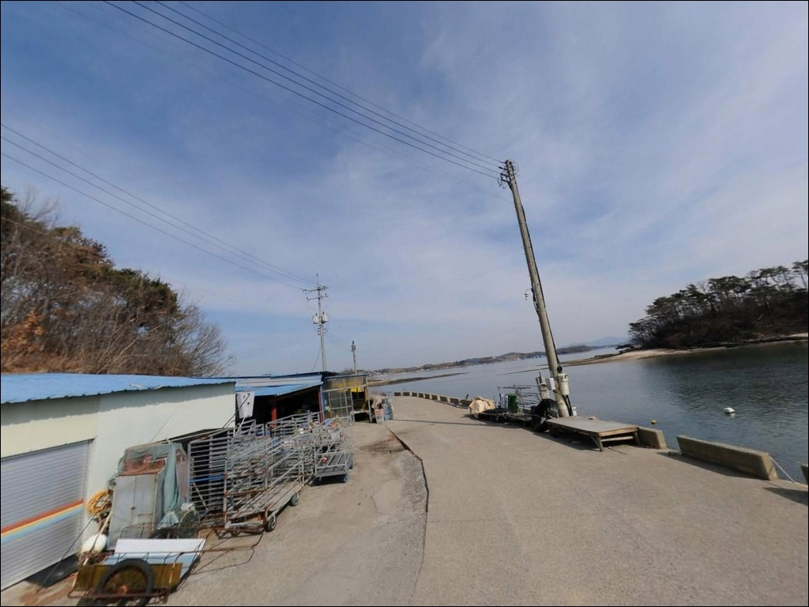
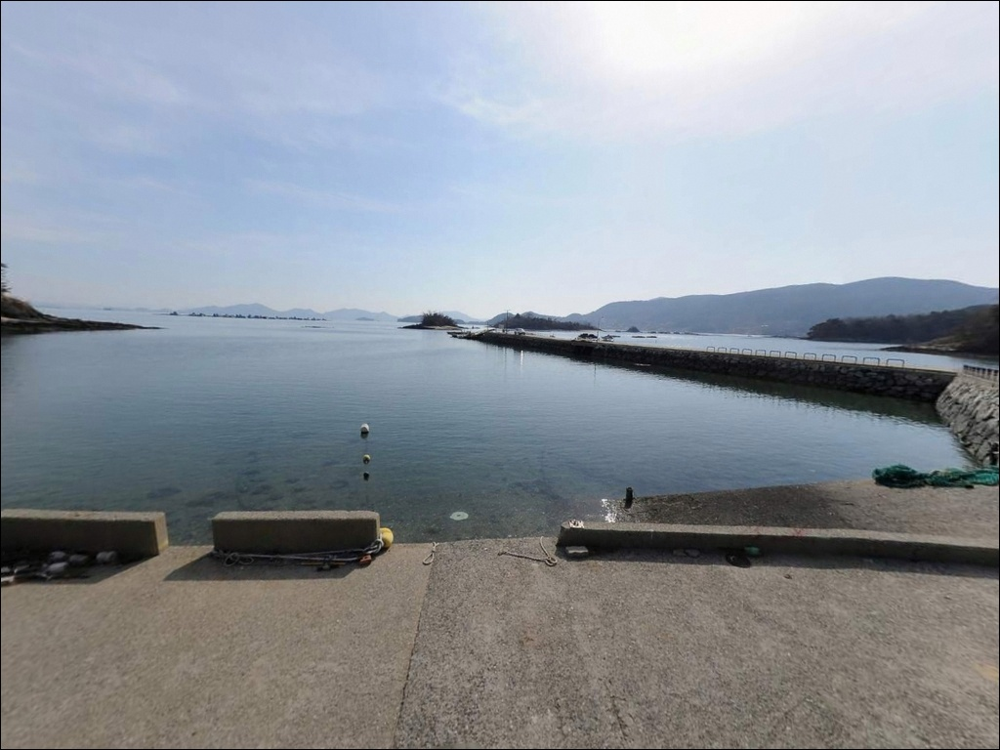
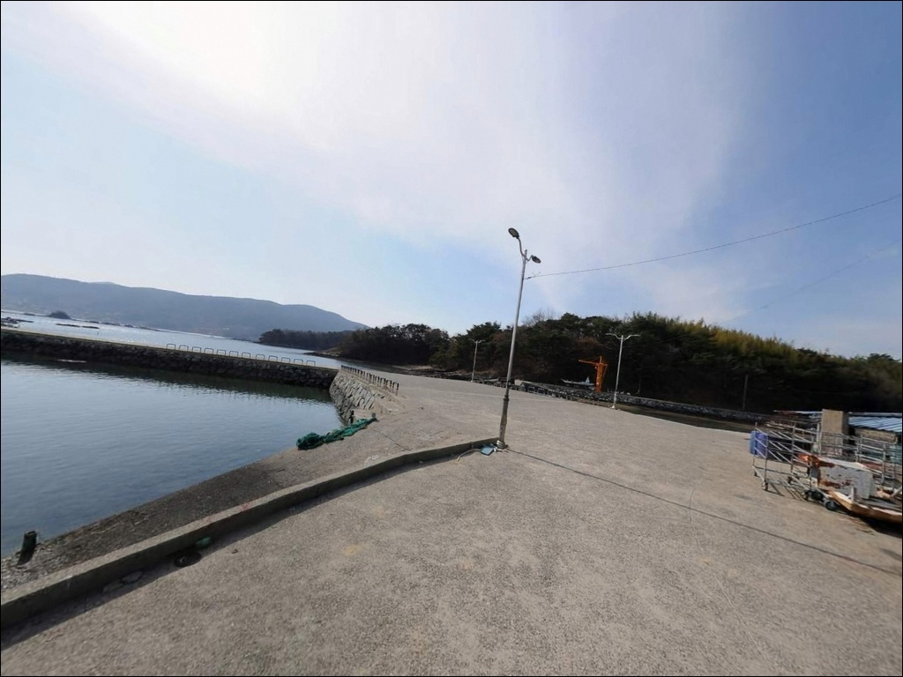
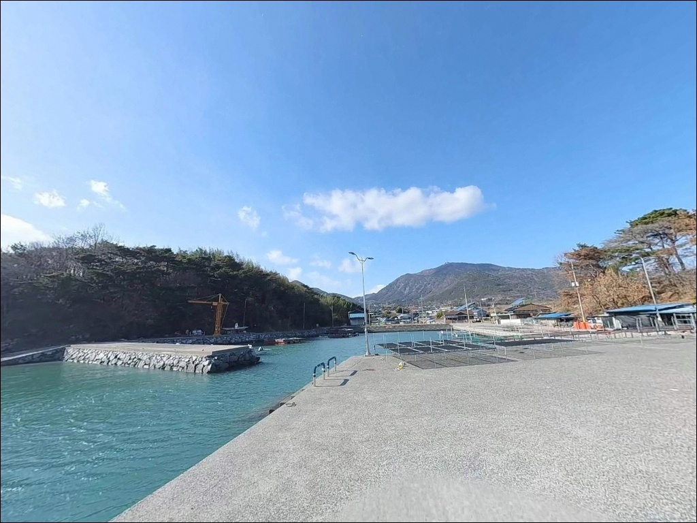
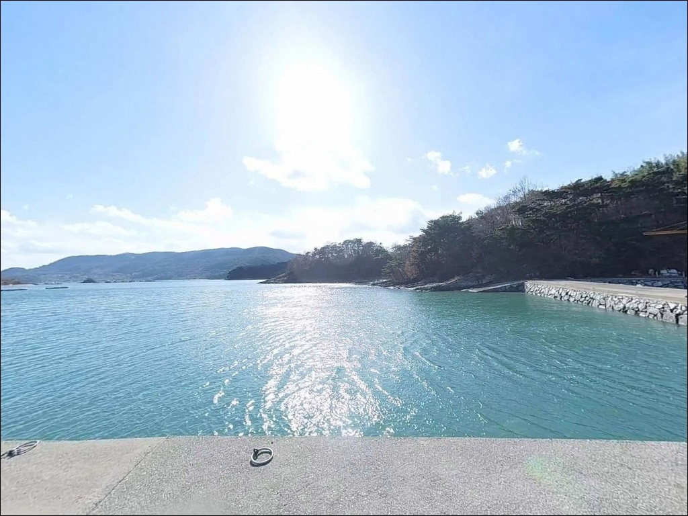
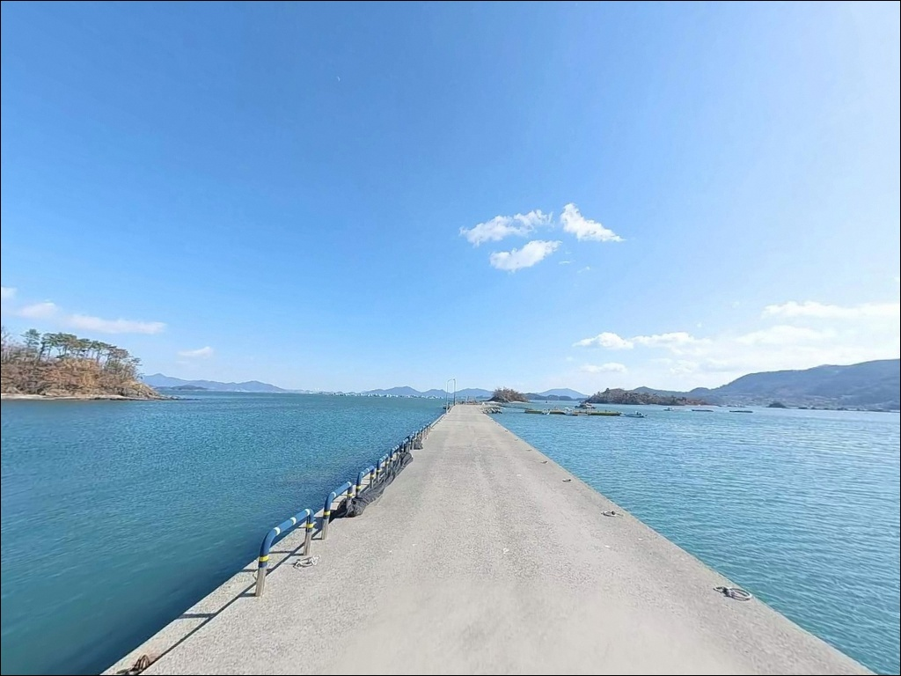
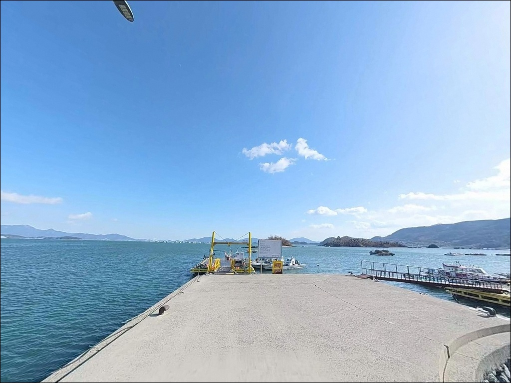
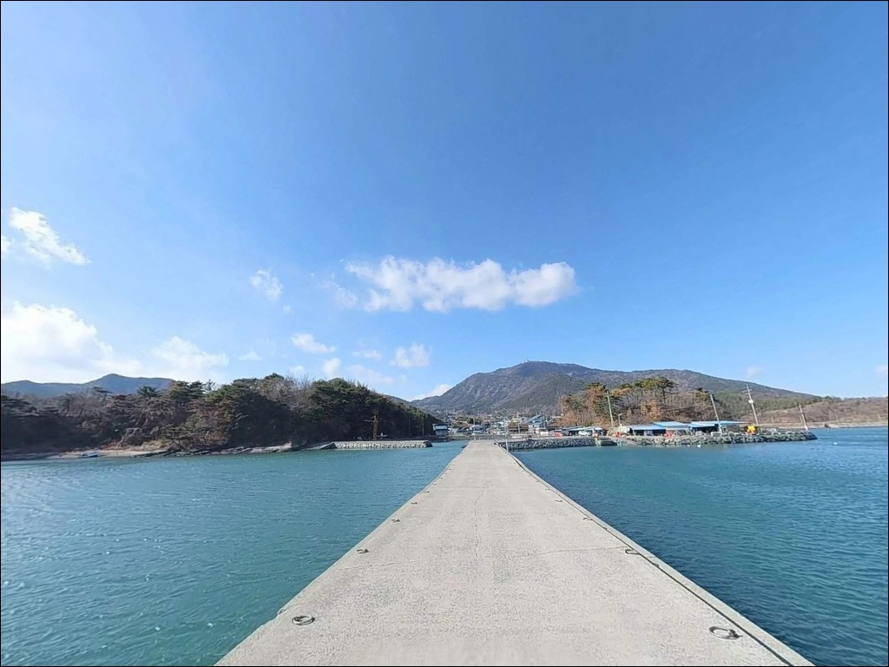

사리 물때엔 봉돌 흘러갈 때, 하동 장황방파제 정조 타이밍 원투낚시
이 페이지에는 광고(제휴 링크 포함)가 있으며, 광고 링크를 통해 구매하면 운영자가 판매 수익 또는 수수료를 받을 수 있습니다. 포인트 사진: 카카오맵 스카이뷰·로드뷰. 이 페이지의 지도·사진 이미지는 카카오맵의 실제 서비스 이미지와 다를 수 있습니다.


포인트 안내
장황방파제
경남 하동군 금남면 대치리 4-4
노량수도 조류를 계산하지 않고 진입하면
어떤 봉돌 무게를 써도 채비가 흘러버립니다.
장황방파제는 하동군과 남해군 사이
좁은 해협 북안에 위치해
들물·날물 조류가 집중되는 구조이며,
사리 전후에는 외측에서 채비 컨트롤이
사실상 불가능해집니다.
경남 하동군 금남면 대치리,
노량수도 북안에 자리한 이 소형 방파제는
직선형 구조로 외항이 수로 방향을 향하고 있습니다.
방파제 끝단 기준 수심 5~8m 내외가 형성되어 있으며,
조류 흐름을 타면
원투·루어·에깅 모두 운용이 가능한 지형입니다.
이 글은 장황방파제의
진입 환경, 물때 판단 기준,
낚시 스타일별 지형 조건에 집중합니다.
조황 단정이나 특정 어종 보장은
이 글의 범위에 포함되지 않습니다.

1. 진입 동선과 포인트 접근성
금남면 해안도로를 따라 대치리 방향으로 진입합니다.
마을 내부로 이어지는 구간은
2차선 이하 폭의 해안 마을도로 수준이며,
급경사 없이 완만하게 이어집니다.
방파제까지 차량 접근 자체에는
큰 어려움이 없는 편입니다.
마지막 접근 구간에서 도로 폭이 좁아지는 지점이 있어
대형 SUV나 캠핑 장비를 실은 차량이라면
출발 전 위성지도로 진입로를 확인하는 편이 안전합니다.
회차 공간은 방파제 진입부 공터와
마을 입구 공터를 활용합니다.
주차는 방파제 시작 지점 공터와
선착장 주변 노변 공간을 활용하는 방식이 일반적입니다.
소형 선착장 구조상 2~4대 수용이 가능한 수준이며,
어선 이동 동선을 막지 않는 자리가 먼저입니다.

2. 차박 환경과 야간 체류 여건
대치리는 인구가 적은 소형 어촌 마을입니다.
야간 통행량이 거의 없고 민가 밀집도가 낮아
프라이버시는 양호한 편입니다.
방파제 구역의 야간 조명은 최소 수준이므로
개인 조명 장비는 필수입니다.
방파제 외측은 노량수도를 향해 열려 있어
강풍이나 파랑 내습 시 바람 영향을 직접 받습니다.
날씨가 불안정한 날에는
내항 쪽 공터를 기점으로 자리를 잡는 편이 낫습니다.
차박을 메인으로 삼기에는
주차 공간이 협소한 편이라
공간 확보 여부를 사전에 확인해야 합니다.


3. 주변 편의시설 및 인프라 현황
방파제 반경 3km 이내에서
노량항 일대를 활용하면
기본 생활 인프라에 닿을 수 있습니다.
노량항은 국가어항으로 지정된 시설이며,
금남면 소재지 방향에도
편의 기반이 형성되어 있습니다.
식수·얼음·낚시 소품은 이 동선을 활용해
사전에 갖춰두는 편이 좋습니다.
반경 10km권으로 확장하면
진교면 소재지 방향에서
마트와 주유소를 이용할 수 있습니다.
방파제 현장에서 즉시 보급이 가능한 시설은
기대하기 어려운 구조이므로
완전 자급 체제로 진입하는 것이
현실적인 준비 방식입니다.

4. 진입 전 반드시 챙겨야 할 준비사항
장황방파제 방문 전 가장 먼저 확인할 것은
물때입니다.
노량수도는 좁은 해협 특성상
들물·날물 조류가 집중되는 구간으로,
사리 전후에는 외측 채비 운용이 어려워집니다.
바다타임에서 금남면 기준 물때를 확인하고
조금 전후 또는 물돌이 전후를 노려
출발 시각을 맞추는 것이 기본 전략입니다.
기상청 해상 예보는 당일 아침에 다시 확인합니다.
외항 노출 구조상 강풍 예보가 있으면
내항 쪽으로 자리를 조정하거나
출조 자체를 재고하는 편이 안전합니다.
뻘·모래 혼합 바닥에서는 밑걸림이 생기는 경우가 있으니
여분 채비는 넉넉하게 준비합니다.
마을 선착장과 연결된 방파제 구조상
어선 조업과 겹치지 않는 자리를 우선합니다.
야간 출조 시 헤드랜턴과 구명조끼는 반드시 챙겨야 합니다.
노량수도는 조류가 강한 구간이라
실족 시 대처가 어려운 환경입니다.

5. 노량수도 조류가 만드는 낚시 여건
장황방파제의 낚시 여건을 결정짓는 핵심은
노량수도의 조류 흐름입니다.
하동군과 남해군 사이 좁은 해협을 통과하는 조류가
방파제 외측을 직접 치는 구조이며,
이 흐름이 수심 5~8m의 외측 구간을
원투와 루어 모두에 유리한 조건으로 만듭니다.
바닥은 뻘과 모래가 섞인 사니질로,
방파제 끝단에서 수로 방향으로 캐스팅하면
바닥 어종을 노리기 좋은 구간이 펼쳐집니다.
외측 석축과 테트라포트 주변은
은신처 구조물이 형성되어 있어
락피시류가 서식하기 좋은 지형입니다.
내항 쪽은 조류가 상대적으로 완만해
찌낚시 운용이 가능한 구간입니다.
사리 전후에는 외측이 너무 강해
내항을 활용하는 판단이 필요한 경우도 있습니다.
출조 전에 이 일대 최신 조황은
반드시 검색해 보시기 바랍니다.
노량수도는 좁은 해협 구조로 들물·날물 조류가
집중되는 환경이라,
물때 판단 없이 방문하면 채비 운용이 어렵습니다.


6. 포인트에 어울리는 낚시 스타일
이 포인트에서 가장 기본이 되는 낚시는
원투낚시입니다.
조류가 살아 있는 들물·날물 시간대에
무거운 봉돌로 방파제 외측을 공략하면
붕장어, 도다리, 감성돔 계열을
기대해볼 수 있는 지형입니다.
정조 전후 타이밍을 노리는 것이
원투 자리를 만드는 핵심입니다.
루어낚시도 이 포인트 구조에 잘 맞습니다.
방파제 끝단과 외측 석축 주변은
조류가 부딪히며 와류가 형성되는 구간이며,
농어와 볼락을 기대할 수 있는 지형 조건을 갖추고 있습니다.
야간에는 소형 루어로
석축 경계선을 탐색하는 방식이 어울립니다.
가을 시즌에는 에깅도 노려볼 만합니다.
내만과 수로가 만나는 구간에서는
갑오징어와 주꾸미의 서식 조건이 형성되는 편이며,
조류를 태워 바닥을 긁는 운영이 이 해역에서 효율적입니다.
찌낚시는 감성돔을 대상으로
내항 쪽 조류가 적당히 흐르는
물돌이 타이밍을 노리는 방식이 기본입니다.

7. 대안 포인트와 플랜 B 동선
장황방파제 주차 여건이 협소하거나
조류가 너무 강할 때 첫 번째 대안은
노량항 방파제입니다.
거리는 약 1.5km로 가까우며,
국가어항으로 정비된 시설이라
발판과 주차 여건이 안정적입니다.
같은 노량수도 해역이라
해황 조건과 조류 패턴도 유사합니다.
금남면 같은 해역에 있는
갈사리 방파제도 대안이 됩니다.
원투낚시 중심 포인트로
해역 패턴이 비슷하며,
두 포인트를 묶어 이동하는
동선 계획이 이 권역에서 효율적입니다.
남해대교를 건너 남해군 방향으로 이동하면
노량수도 남안의 낚시 포인트들을 접할 수 있습니다.
조류 방향이 반대편이라
조황 패턴을 교차 확인하기에도 유용하며,
방파제 외측은 조류 흐름을 직접 받아
루어 반응이 살아나는 자리라는 점은
이쪽 해역 모든 포인트에서 공통으로 적용됩니다.

조류 구조를 이해하면
장황방파제가 달라 보입니다
원투낚시나 루어낚시를 즐기는 낚시인이라면
노량수도 북안의 이 방파제는
지형 조건 면에서 잘 맞는 구조입니다.
강한 조류가 만드는 수심 있는 외측 공간과
석축·테트라포트 주변 은신처 구조가
복합 공략을 가능하게 합니다.
반면 물때 계산 없이 사리 전후에 들어가거나,
진입로 확인 없이 대형 차량으로 접근하면
낚시 자체가 여의치 않은 상황을
맞닥뜨릴 수 있습니다.
물때 확인, 진입로 점검, 자급 준비,
이 세 가지가 갖춰지면
조용하고 실속 있는 출조가 가능한 포인트입니다.
편의시설 없는 소형 어촌 마을에서
노량수도 흐름 옆에 자리를 잡는
낚시 겸 차박 여행자라면,
주차 공간만 미리 확인해두면
조용하고 실속 있는 하룻밤이 됩니다.